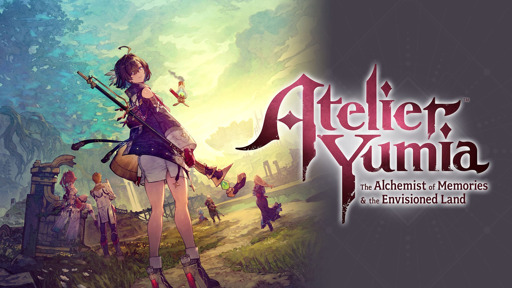

Derniers Tests

PS5
PS4
Xbox Series X|S
Switch
PC
Atelier Yumia : L'Alchimiste des Souvenirs et la Terre Rêvée
21 mars 2025Un JRPG d'alchimie qui perpétue l'héritage de la série Atelier avec une nouvelle héroïne.
Lire le test complet
PS5
Xbox Series X|S
Switch
PC
Whisker Waters
18 mai 2024Un RPG de simulation de pêche avec des chats, entre charme et imperfections techniques.
Lire le test complet